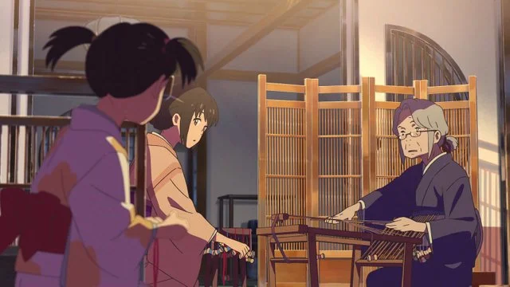
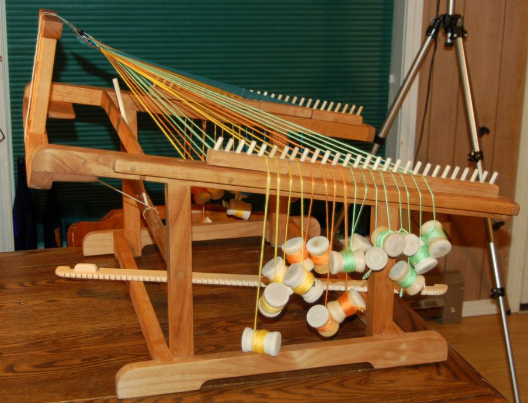

A brief look at Kumihimo, the traditional art popularized by Makoto Shinkai’s movie

The movie 'Your Name’ (Kimi No Na Wa, 君の名は), produced by CoMix Wave Films and directed by Makoto Shinkai, released in 2016, is considered by many to be one of the best films ever produced in Japan. The film is a romantic anime that tells the story of two teenagers who live in different cities in Japan, who at a certain point begin to swap bodies and live each other's lives. The body swap, even though not explained early on in the film, is grounded in mystical stories that blend fiction and traditional Japanese legends into an authentic plot. In addition to the legends that underlie the exchange of bodies, several other Japanese traditions are present in the film; among them is the art of weaving yarns practiced by Mitsuha, the female protagonist in the movie.
In the film, the Miyamizu family has a multi-generational tradition of weaving yarn to create silk ornaments. However, this braiding practice was only popularized in Your Name, but the truth is that this is a real practice; a traditional art that has survived for a long time in Japan called Kumihimo.
Kumihimo (組み紐) in Japanese literally means "jointed strings", and is one of the most traditional ways of producing bracelets, necklaces, and other types of ornaments in Japan. In the past, the cords produced allowed samurai to tie their armor to that of their horses in a practical and decorative way, but over time these cords began to be used mainly as ornaments, bracelets, kimono ties, hair ties, etc.
In the beginning, they were made entirely by hand, but over time tools such as the Marudai, Takadai, and Karakumidai were developed to streamline the production process. In Your Name, the tool used is the Takadai, which consists of a wooden structure that uses weights and counterweights to facilitate braiding. You can make a variety of sewing patterns with Takadai. Kumihimo results can be simple braids, made with 3 bundles, or more complex, which can contain more than 140 bundles of wires.
Between 5,000 and 6,000 years ago — in the Jōmon period — some patterns that can be understood as a primitive form of Kumihimo were already perceived. Still, it was only between the 6th and 8th centuries — in the Asuka period — that the tradition had more significant advances. The technique is still incorporated into fashion today, with some family businesses founded several generations ago still on the market.
Back to the top